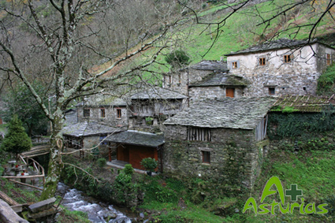

Un espacio geográfico de contacto y transición entre Asturias y Galicia, entre el mar y la montaña.

• Taramundi: concejo vinculado a la artesanía del hierro.
- Conjunto etnográfico de Os Teixois: Podrás observar cómo nuestros antepasados controlaron y usaron la fuerza del agua para sus intereses: el molino, la rueda de afilar, el batán, y el mazo son ingeniosas máquinas hidráulicas que podrá ver en perfecto funcionamiento.
- Famosas navajas de Taramundi: visita de un taller tradicional.
- La Casa del Agua, en Bres, podemos conocer cómo el agua es fuerza motriz de multitud de máquinas, ingenios, herramientas e incluso relojes del antiguo Egipto.
- Museo de los Molinos de Mazonovo: reproduce molinos de diversas épocas y partes del mundo, con especial atención a aquellos que son movidos por agua.
• Santa Eulalia de Oscos:
- Museo Casa Natal del Marqués de Sargadelos: Lugar de nacimiento de este industrial del siglo XVIII impulsor de la moderna siderurgia y la producción cerámica de calidad.
• Villanueva de Oscos:
- Monasterio medieval de Santa María de Villanueva, cuyo claustro podremos visitar, y su iglesia monacal, la mayor de Los Oscos.
• El conjunto histórico de la villa de Castropol.

Localización del itinerario